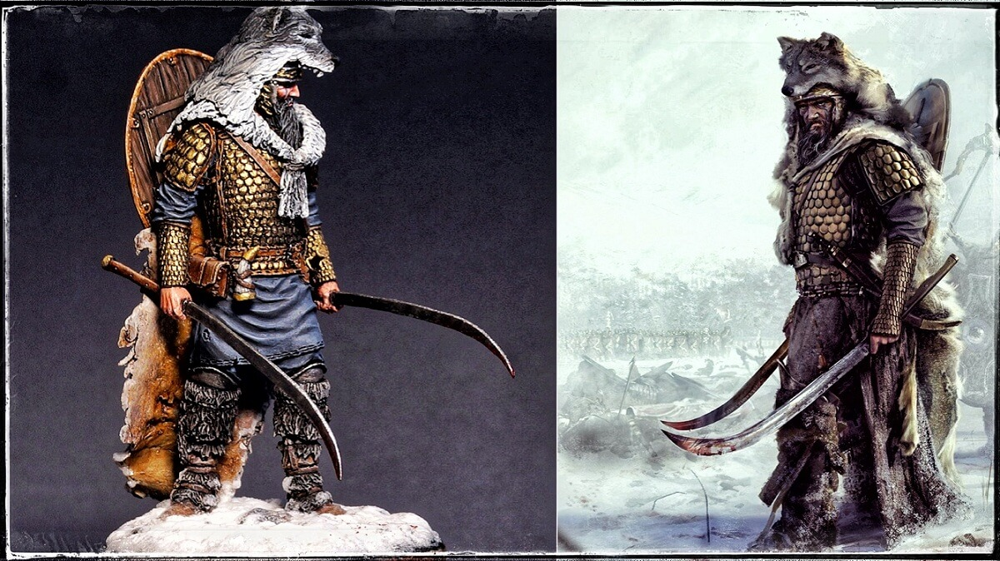
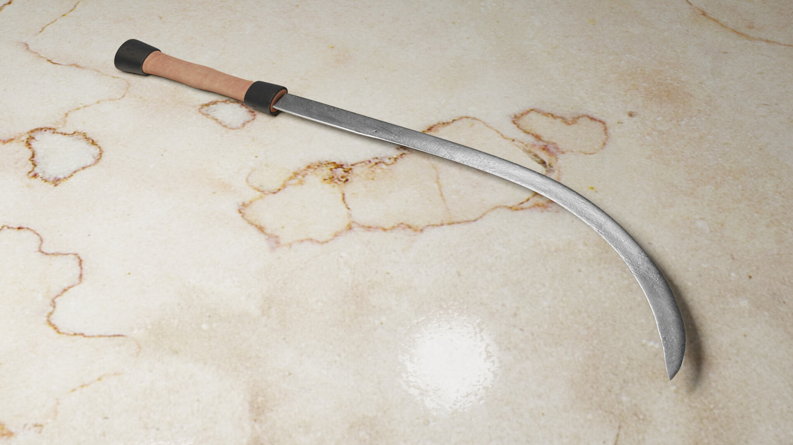
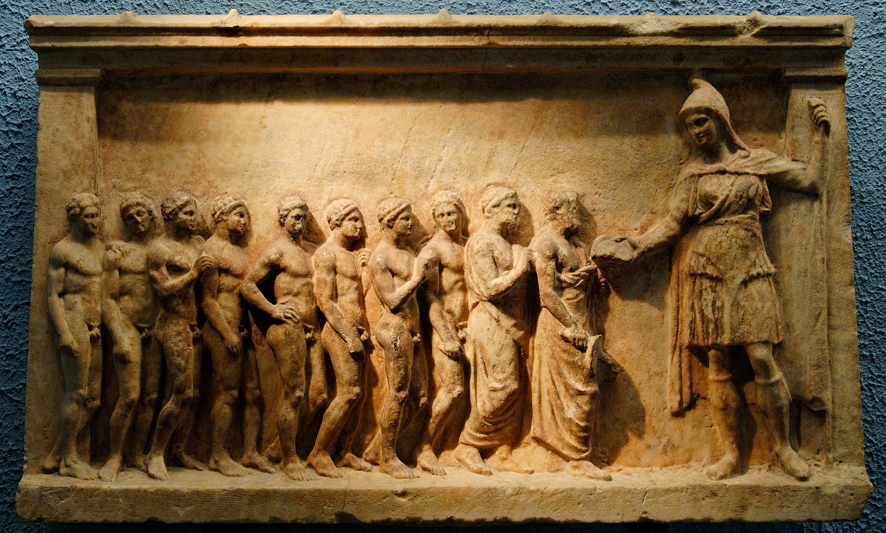

Dacians
The Dacians (/ˈdeɪʃənz/; Latin: Daci [ˈdaːkiː]; Greek: Δάκοι,[2] Δάοι,[2] Δάκαι[3]) were the ancient Indo-European inhabitants of the cultural region of Dacia, located in the area near the Carpathian Mountains and west of the Black Sea. They are often considered a subgroup of the Thracians.[4] This area includes mainly the present-day countries of Romania and Moldova, as well as parts of Ukraine,[5] Eastern Serbia, Northern Bulgaria, Slovakia,[6] Hungary and Southern Poland.[5] The Dacians and the related Getae spoke the Dacian language, which has a debated relationship with the neighbouring Thracian language and may be a subgroup of it. Dacians were somewhat culturally influenced by the neighbouring Scythians and by the Celtic invaders of the 4th century BC.
Etmytology
The name Daci, or "Dacians" is a collective ethnonym.[29] Dio Cassius reported that the Dacians themselves used that name, and the Romans so called them, while the Greeks called them Getae.[30][31][32] Opinions on the origins of the name Daci are divided. Some scholars consider it to originate in the Indo-European *dha-k-, with the stem *dhe- 'to put, to place', while others think that the name Daci originates in *daca 'knife, dagger' or in a word similar to dáos, meaning 'wolf' in the related language of the Phrygians.[33][34]
One hypothesis is that the name Getae originates in Indo-European *guet- 'to utter, to talk'.[35][33]
Another hypothesis is that Getae and Daci are the Iranian names of two Iranian-speaking Scythian groups that had been assimilated into the larger Thracian-speaking population of the later "Dacia."[36][37]
Early history of etymological approaches
In the 1st century AD, Strabo suggested that its stem formed a name previously borne by slaves: Greek Daos, Latin Davus (-k- is a known suffix in Indo-European ethnic names).[38] In the 18th century, Grimm proposed the Gothic dags or "day" that would give the meaning of "light, brilliant". Yet dags belongs to the Sanskrit word-root dah-, and a derivation from Dah to Δάσαι "Daci" is difficult.[14] In the 19th century, Tomaschek (1883) proposed the form "Dak", meaning those who understand and can speak, by considering "Dak" as a derivation of the root da ("k" being a suffix); cf. Sanskrit dasa, Bactrian daonha.[39] Tomaschek also proposed the form "Davus", meaning "members of the clan/countryman" cf. Bactrian daqyu, danhu "canton".[39]
Modern theories
Since the 19th century, many scholars have proposed an etymological link between the endonym of the Dacians and wolves.
A possible connection with the Phrygians was proposed by Dimitar Dechev (in a work not published until 1957).[citation needed] The Phrygian language word daos meant "wolf",[citation needed] and Daos was also a Phrygian deity.[40] In later times, Roman auxiliaries recruited from the Dacian area were also known as Phrygi.[citation needed] Such a connection was supported by material from Hesychius of Alexandria (5th/6th century),[41][42] as well as by the 20th century historian Mircea Eliade.[40]
The German linguist Paul Kretschmer linked daos to wolves via the root dhau, meaning to press, to gather, or to strangle – i.e. it was believed that wolves would often use a neck bite to kill their prey.[28][43]
Endonyms linked to wolves have been demonstrated or proposed for other Indo-European tribes, including the Luvians, Lycians, Lucanians, Hyrcanians and, in particular, the Dahae (of the south-east Caspian region),[44][45] who were known in Old Persian as Daos.[40] Scholars such as David Gordon White have explicitly linked the endonyms of the Dacians and the Dahae.[28]
Hungarian linguist and historian Dr. Viktor Padányi writes "By all indications their name comes from the Sumerian "dag, tag" word meaning two handed axe, battle axe."[46]
The Draco, a standard flown by the Dacians, also prominently featured a wolf head.
However, according to Romanian historian and archaeologist Alexandru Vulpe, the Dacian etymology explained by daos ("wolf") has little plausibility, as the transformation of daos into dakos is phonetically improbable and the Draco standard was not unique to Dacians. He thus dismisses it as folk etymology.[47]
Another etymology, linked to the Proto-Indo-European language roots *dhe- meaning "to set, place" and dheua → dava ("settlement") and dhe-k → daci is supported by Romanian historian Ioan I. Russu (1967).[48]

The weapon most associated with the Dacian forces that fought against Trajan's army during his invasions of Dacia was the falx, a single-edged scythe-like weapon. The falx was able to inflict horrible wounds on opponents, easily disabling or killing the heavily armored Roman legionaries that they faced. This weapon, more so than any other single factor, forced the Roman army to adopt previously unused or modified equipment to suit the conditions on the Dacian battlefield
Religion
Dacian religion was considered by the classic sources as a key source of authority, suggesting to some that Dacia was a predominantly theocratic state led by priest-kings. However, the layout of the Dacian capital Sarmizegethusa indicates the possibility of co-rulership, with a separate high king and high priest.[154] Ancient sources recorded the names of several Dacian high priests (Deceneus, Comosicus and Vezina) and various orders of priests: "god-worshipers", "smoke-walkers" and "founders".[154] Both Hellenistic and Oriental influences are discernible in the religious background, alongside chthonic and solar motifs.[154] According to Herodotus' account of the story of Zalmoxis or Zamolxis,[8] the Getae (speaking the same language as the Dacians and the Thracians, according to Strabo) believed in the immortality of the soul, and regarded death as merely a change of country. Their chief priest held a prominent position as the representative of the supreme deity, Zalmoxis, who is called also Gebeleizis by some among them.[8][224] Strabo wrote about the high priest of King Burebista Deceneus: "a man who not only had wandered through Egypt, but also had thoroughly learned certain prognostics through which he would pretend to tell the divine will; and within a short time he was set up as god (as I said when relating the story of Zamolxis)."[225]
